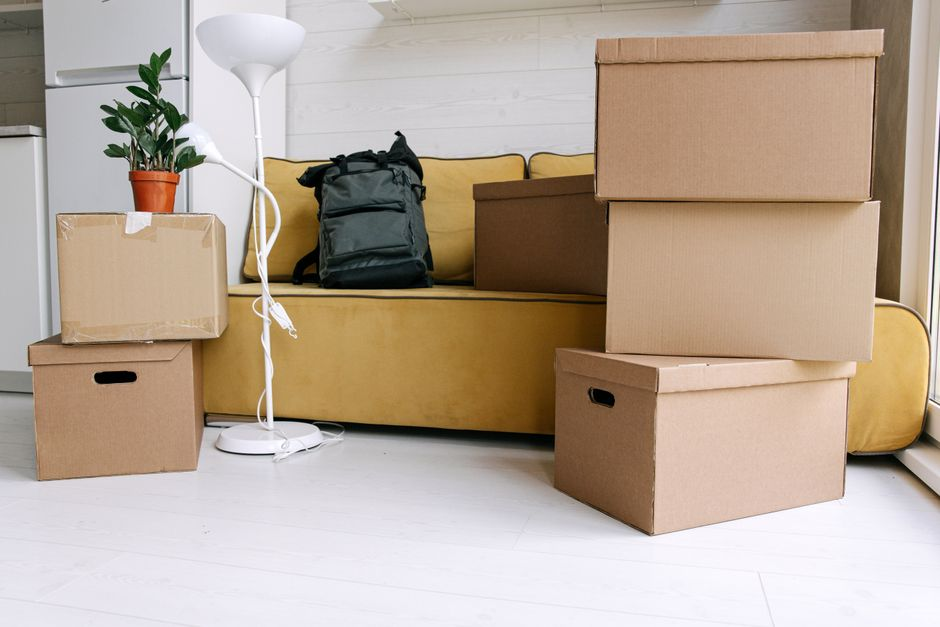

Innovations de rangement : les boîtes à multifonction pour petits espaces

Photo: Ivan S / Pexels
Les boîtes de rangement polyvalentes (avec couvercle, compartiments ou roulettes) sont pratiques dans un petit espace. Voici comment bien les choisir et les utiliser sans risque.
Choisir les bonnes boîtes
- Mesurez l'espace disponible (étagère, dessous de lit, placard) avant d'acheter.
- Préférez des boîtes de même format, qui s'empilent bien.
- Choisissez des matériaux solides, avec des poignées, et un couvercle qui se verrouille ou se pose bien.
- Les boîtes transparentes aident à retrouver le contenu.
Trier avant de ranger
Triez d'abord vos affaires par catégorie (vêtements, chaussures, câbles, papiers). Ne rangez pas ce dont vous n'avez plus besoin : une boîte pleine de choses inutiles ne fait pas gagner de place.
Étiqueter
Une étiquette ou un code couleur sur chaque boîte permet de la retrouver sans tout ouvrir.
Empiler en sécurité
- Placez les boîtes lourdes en bas et les légères en haut.
- Ne dépassez pas la limite de poids indiquée par le fabricant.
- N'empilez pas au-dessus de la hauteur d'épaule : une pile qui tombe peut blesser.
- Ne bloquez jamais une sortie, une fenêtre ou un radiateur.
Attention à ce que vous rangez
Ne stockez pas de produits inflammables, de produits chimiques ou d'aérosols dans des boîtes près d'une source de chaleur ou d'une prise. Gardez les produits d'entretien hors de portée des enfants et des animaux.
Entretenir
Passez un chiffon humide sur les boîtes une ou deux fois par an. Si vous rangez du linge, assurez-vous qu'il est bien sec pour éviter l'humidité et les moisissures.
Avec un bon tri, une taille adaptée et un empilage prudent, ces boîtes rendent un petit espace plus ordonné et plus sûr.
Produits recommandés
En tant que Partenaire Amazon, je réalise un bénéfice sur les achats remplissant les conditions requises.